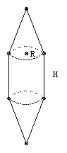

A solid has a cylindrical middle with a conical cap at each end. The height of each cap equals the length of the middle. For a given surface area, what shape maximizes the volume?
Solution

Let the radius be R and the height H. The area is 2πRH + 2πR√(R2+H2). The volume is 5/3 πR2H.
The area is fixed, so for some fixed k, we have R ( H + √(R2+H2) ) = k. This gives H = (k2 - R4)/(2kR). We must now choose R to maximise f(R) = R2H = R (k2 - R4)/2k. Evidently the allowed range for R is from R = 0 up to √k (corresponding to H = 0). But f(0) = 0 and f(√k) = 0, so the maximum is at some interior point of the interval. Differentiating, we find it is at Rmax = (k2/5)1/4. In terms of the area A, we have A = 2πk, so Rmax = (A/(π 2√5) )1/2.
Many thanks to Philip Ascher for correcting an error in the last line!

© John Scholes
jscholes@kalva.demon.co.uk
5 Mar 2002
Last corrected/updated 22 Feb 03